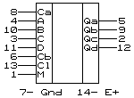

ИЕ14 = (196) - двоично-десятичный счетчик
ИЕ15 = (197) - двоичный счетчик

Счетчики состоят из делителей на 2 и на 5/8 с общими сбросом и загрузкой. Для получения делителя на 10/16 необходимо соединить "Qa" и " Cb". "M"=H - счет; "M"=L - загрузка.
Вывод
Назначение
M
выбор счет/загрузка
Ca
вход делителя на 2 (↓)
Cb
вход делителя на 5/8 (↓)
Cl
сброс (активно- L)
A-D
входы для загрузки
Параметры
54/74 (133,155)
54LS/74LS (533,555)
54S/74S (530,531)
Выходной ток лог. 1, мА
0.8
0.4
1
Выходной ток лог. 0, мА
16
4/8
20
Входной ток лог. 0 Ca, мА
4.8
2.4
8
Входной ток лог. 0 Cb (ИЕ14), мА
6.4
2.8
10
Входной ток лог. 0 Cb (ИЕ15), мА
3.2
1.3
6
Входной ток лог. 0 Cl (ИЕ14), мА
3.2
0.8
0.75
Входной ток лог. 0 (ИЕ15), мА
1.6
0.4
0.75
Входной ток лог. 1 Ca, мкА
80
40
50
Входной ток лог. 1 Cb, мкА
120
80
50
Входной ток лог. 1 Cb, мкА
80
40
50
Входной ток лог. 1 Cl, мкА
80
40
50
Входной ток лог. 1, мкА
40
20
50
Ток потребления, мА
-48-59
-16-27
-75-120
Задержки распространения (нс)
От входа До выхода
155ИЕ14
155ИЕ15
555ИЕ14
555ИЕ15
531ИЕ14
531ИЕ15
"Cl" Q = H-->L
-25-37
-25-37
-34-51
-34-51
-26-37
-26-37
"Load" Q = L-->H
-22-33
-22-33
-27-41
-26-39
-10-18
-10-18
"Load" Q = H-->L
-24-36
-24-36
-30-45
-30-45
-12-18
-12-18
"A"-"D" Q = L-->H
-16-24
-16-24
-20-30
-18-27
- 7-12
- 7-12
"A"-"D" Q = H-->L
-25-38
-25-38
-29-44
-29-44
-12-18
-12-18
"Ca" Qa= L-->H
- 7-12
- 7-12
- 8-15
- 8-15
- 5-10
- 5-10
"Ca" Qa= H-->L
-10-15
-10-15
-13-20
-14-21
- 6-10
- 6-10
"Cb" Qb= L-->H
-12-18
-12-18
-16-24
-12-19
- 5-10
- 5-10
"Cb" Qb= H-->L
-14-21
-14-21
-22-33
-22-35
- 8-12
- 8-12
"Cb" Qd= L-->H
-14-21
-36-54
-12-18
-55-78
- 5-10
-18-27
"Cb" Qd= H-->L
-12-18
-42-63
-30-45
-63-95
- 8-12
-22-33
Длительность "Ca"
10-
10-
20-
20-
5-
5-
Длительность "Cb"
20-
20-
30-
30-
10-
10-
Длительность "Cl"
15-
15-
15-
15-
30-
30-
Длительность "Load"
20-
20-
20-
20-
5-
5-
Fмакс. для "Ca", МГц
50-70-
50-70-
30-40-
30-40-
100-140-
100-140-
Fмакс. для "Cb", МГц
25-
25-
15-
15-
50-
50-